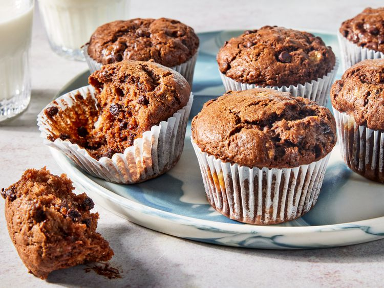

Chocolate Banana Muffin recipe

Description
These chocolate banana muffins are so moist and full of flavor! I have looked at dozens of
recipes and most had too much sugar for my liking. There is absolutely no need for a lot of
sugar to make these muffins delicious. Because they have bananas and chocolate chips, I just
added 1/2 cup of sugar, which turned out perfect!
Ingredients
- 1 1/2 cups all-purpose flour
- 1/4 cup unsweetened cocoa powder
- 1 1/2 teaspoons baking powder
- 1/2 teaspoon baking soda
- 1/2 teaspoon salt
- 1/2 cup white sugar
- 1/2 cup canola oil
- 1/4 cup milk
- 1 egg
- 1 teaspoon vanilla extract
- 2 large very ripe bananas, mashed
- 3/4 mini semisweet chocolate chips
Steps
- Gather all ingredients. Preheat the oven to 350 degrees F (175 degrees C).
Line a12-cup muffin tin with paper liners.
- Combine flour, cocoa, baking powder, baking soda, and salt together in a large bowl.
- Whisk sugar, oil, milk, egg, and vanilla extract together in a separate bowl until smooth.
- Stir into flour mixture until just moistened. Fold in bananas and chocolate chips.
- Divide batter among the muffin cups, filling each about 3/4 full.
- Bake in the preheated oven until a toothpick inserted into the center comes out clean,
20 to 25 minutes.
Home